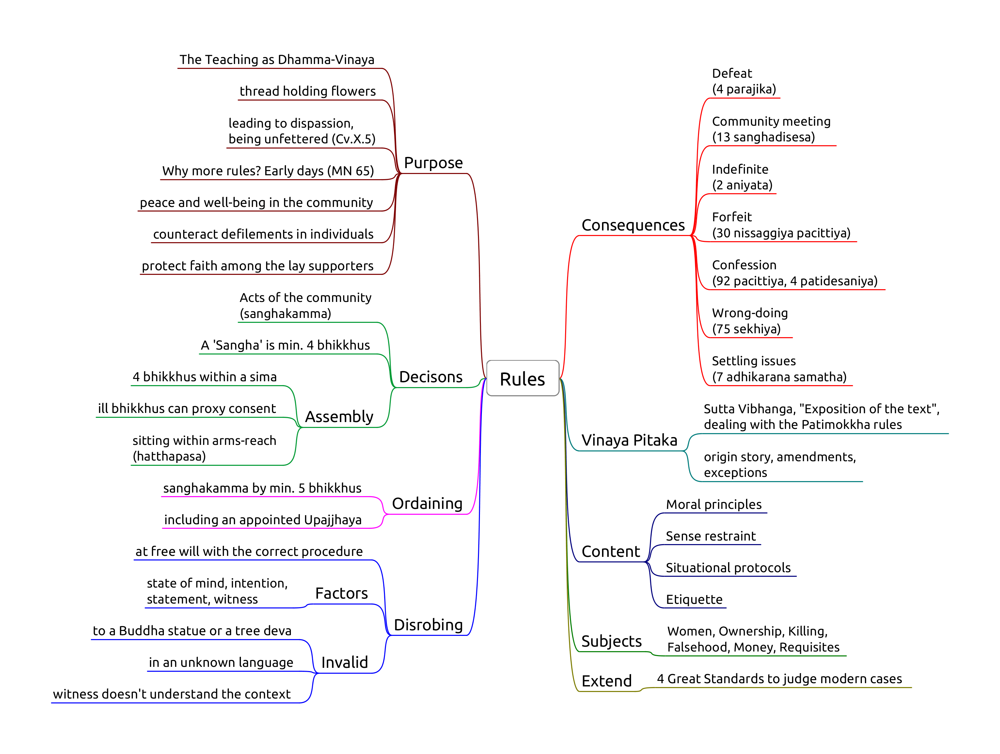
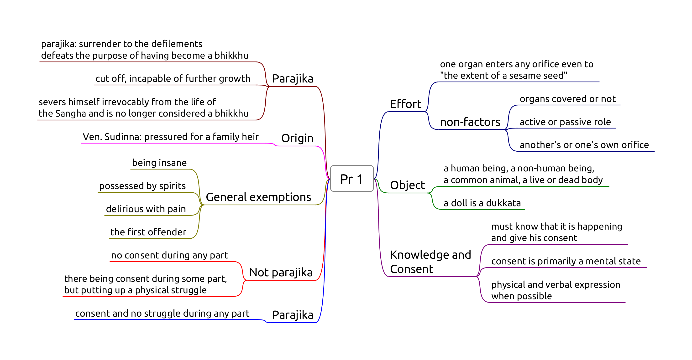

Introduction
- Pāṭimokkha: 227 rules, 4 entails automatic expulsion (defeat)
- They contain moral principles, sense restraint, situational protocols, etiquette
- No physical punishment but procedures, forfeit, confession
- The Buddha established the rules one at a time
- Dhamma-Vinaya, Teaching and Discipline
- Each rule includes its origin story, amendments and exceptions
- 5 factors: object, effort, intention, perception, result
- Blanket exemptions: insane, possessed by spirits, delirious with pain, the first offender
- Common non-offences: unknowingly, unthinkingly, unintentionally
- 4 Great Standards to judge modern cases
- Min. 4 bhikkhus for Sangha actions and decisons
- Ordination requires min. 5 bhikkhus
- Disrobe at free will but follow the correct procedure
- 'Kor wat' house-rules per monastery
- International agreements (Mahathera Samakorn, ECM)
The ten reasons for the establishing of the Pāṭimokkha:
- "For the excellence of the Sangha;
- for the wellbeing of the Sangha;
- for the control of ill-controlled bhikkhus;
- for the comfort of wellbehaved bhikkhus;
- for the restraint of the āsavā in this present state;
- for protection against the āsavā in a future state;
- to give confidence to those of little faith;
- to increase the confidence of the faithful;
- to establish the True Dhamma;
- to support the Vinaya."
(Vin.III.20; A.V.70)
Four things not to be done, akaraṇīya:
- sexual intercourse: as a man with his head cut off cannot live
- theft: as a withered leaf separated from its stalk cannot become green again
- depriving a human being of life: as a flat stone, broken in half, cannot be put together again
- claiming false attainments: as a palm tree, cut off at the crown, is incapable of further growth
(Vin.I.96-97)

The Four Great Standards
Not already prohibited:
if it conforms with what is prohibited,
or it goes against what is allowable,
that is prohibited.
Not already prohibited:
if it conforms with what is allowable,
or it goes against what is prohibited,
that is allowable.
Not already allowed:
if it conforms with what is prohibited,
or it goes against what is allowable,
that is prohibited.
Not already allowed:
if it conforms with what is allowable,
or it goes against what is prohibited,
that is allowable.
(Mv.VI.40.1)
Killing and Harming
Pr 3 : Killing a human being
Pc 61 : Killing an animal
Pc 20 : Pouring water containing living beings
Pc 62 : Drinking water containing living beings
Pc 10 : Digging soil
Pc 11 : Damaging living plants or seeds
Pr 3, Killing a human being

Origin: bhikkhus develop aversion to the body and kill themselves or ask an assassin to kill them.
Recommending euthanasia can be parajika if the instruction is followed.
Pc 61, Killing an animal
Giving an order fulfils effort. Result is a factor.
Doesn't include animals smaller than visible to the naked eye. Doesn't include accidents (sweeping).
Pc 20, Pouring water containing living beings
Knowing they will die from pouring it. It can also include knowingly adding poisonous substances.
Giving an order fulfils effort.
Result is not a factor. Doesn't include accidents.
Can't water plants if one plans to eat its fruit, but may indicate it for others.
Pc 62, Drinking water containing living beings
Knowing they will die from drinking it, even accidentally.
Using water strainers or robe. Determining a corner of the sanghati as a water-filter.
Result is not a factor.
Pc 10, Digging soil
Origin: relates to the ancient belief that soil is alive, and loses life when dug up.
Object: 'genuine' soil.
Not genuine soil:
- pure or mostly rock, stones, gravel, sand
- burnt or already dug up soil
- until rained on for four months
- dust from wind erosion
Effort: Digging, burning, making a hole, or giving command to do it.
Putting tent pegs in the ground is to be confessed.
Non-offenses:
- unknowingly, unthinkingly, unintentionally
- indicating a general need or task
- digging a trapped person or animal out
Allowance to indicate a need or general task to a lay person by "wording it right."
The expression kappiya-vohāra ("allowable expression," or "wording it right") is used where an express command would be an offense, but an indication of a desire or intent would not.
Pc 11, Damaging living plants or seeds
Origin: a bhikkhu cuts down a tree where a deva was living. The rule is formed later, when people complained of the bhikkhus mistreating one-facultied life.
Object: Living plant or seed. Lower plant life (i.e. mold, algae, fungi) is not included.
Effort: cutting, breaking, cooking, or getting others to do it.
Fruit with seeds: allowance to make allowable (kappiyam). Fruit can be kappied in one "heap".
To 'kappi' fruit is about the feelings of the donor, not killing the fruit or transfering kamma.
Knowingly eating un-kappied seeds is dukkata.
Non-offenses:
- unknowingly, unthinkingly, unintentionally
- asking a lay person for flowers etc. in general, or indicating a general task
- can cut a trapped person or animal out
- counter-fire
Note: Pc 10 and Pc 11 prevents bhikkhus from engaging in agriculture, which is probably part of the intended results, although not their direct origin.
Stealing
- Pr 2, Stealing
- NP 25, Snatching back robe
- Pc 59, Using cloth or bowl under shared ownership
Pr 2, Stealing
See maps Pr 2 and Pr 2 -- Effort.
NP 25, Snatching back robe
Object: a piece of robe-cloth, at least 4x8 fingerbreadth.
Perception: one still considers the robe as one's own, otherwise it could be parajika.
Intention: impelled by anger or displeasure. Taking it on trust is not an offense.
Effort: snatching back or having someone to snatch it back.
Dukkata for:
- giving the command
- other than cloth
- snatching from a non-bhikkhu
- hinting with anger
Non-offenses:
- recipient returns the robe on his own accord
- donor takes it back on trust
- hinting without anger
Pc 59, Using cloth or bowl under shared ownership
Vikappana is an arrangement whereby a bhikkhu places robe or cloth under shared ownership so that it may be stored for any length of time.
If the bhikkhu simply gives the robe back to the stores, he has given up ownership of it and another bhikkhu would be free to take it.
Vikkappana allows a bhikkhu to determine a smaller sanghati while travelling, but not entirely giving up his regular sanghati.
Object: robe-cloth, min. 4x8 fingerbreadths, that one has placed under shared ownership.
Perception of ownership is not a factor.
Effort: using the cloth without the ownership being rescinded.
Non-offenses:
- rescinded ownership
- using it on trust (shared with friends)


Sexual Conduct
- Pr 1, Sexual intercourse
- Sg 1, Intentional emission of semen
Pr 1, Sexual intercourse

- as a man with his head cut off cannot become one to live again
- as a withered leaf separated from its stem cannot be joined again
- as a flat stone that has been broken in half cannot be put together again
- as a palmyra tree cut off at the crown is incapable of further growth.
Sg 1, Intentional emission of semen

A bhikkhu who comitted a sanghadisesa must inform another bhikkhu as soon as possible, but at most until the next dawnrise. The Sangha must meet and at his request, allow a six-day period of penance (mānatta). If he concealed the offence, a probation period (parivāsa) is required beforehand.
He may choose where to observe the penance, but he can only be rehabilitated as a bhikkhu in regular standing by a community meeting of at least 20 bhikkhus.
Lustful Conduct
- Sg 2, Lustful contact with a woman
- Sg 3, Speaking lewd words to a woman
- Sg 4, Praising sexual intercourse as gift
- Pc 7, Teaching more than six sentences
Sg 2, Lustful contact with a woman
Origin: Ven. Udayin disturbing a bhrahmin's wife while they are visiting him.
Object: a living woman, "even one born on that day." Body, hand, limbs, a lock of hair, etc.
Perception: perceiving her to be a woman.
Intention: impelled by lust, any state of passion, desire to enjoy the contact. Can be an extended period of desire, or a momentary attraction.
Contact out of filial affection for family members is a dukkata.
Effort: physical contact.
Items she is wearing are direct contact.
Indirect contact:
- touching a item which she is holding: thullacaya
- touching her with an item one is holding: thullacaya
- item to item: dukkata
- tossing: dukkata
- shaking sth. she is standing on: dukkata
Passive contact:
Contact while trying to shake her off is not an offense.
If the bhikkhu's aim is to partake, the offence is sanghadisesa.
Non-offenses
- unintentionally
- unthinkingly
- unknowingly
- the bhikkhu doesn't give his consent
- no desire for the contact
- has desire, but makes no effort
Sg 3, Speaking lewd words to a woman
Wanting to enjoy saying something lewd. Directly referencing her genitals, anus, or her performing sexual intercourse. Slang, euphemisms, non-verbal gestures fulfill effort.
Object: Any woman who recognizes lewd comments.
May not know: too young, too innocent or retarded, or doesn't know the language.
Perception: The bhikkhu perceives her to be a woman.
Intention: Impelled by lust. The minimum lust is wanting to enjoy saying something lewd.
- not necessary to have desire to have sex with her
- statements in anger come under Pc 2 instead
Effort: Praising, criticizing, asking, etc. referencing her genitals, anus, or her performing sexual intercourse.
- direct mention of above
- indirect references, slang, euphemisms, non-verbal gestures fulfill effort
Another person's private parts don't fulfill effort.
Result: The woman immediately understands.
If she only understands later:
- thullacaya if it was a direct reference
- dukkata if it was indirect
Non-offenses
- speech aiming at spiritual welfare, if not out of lust
- the bhikkhu doesn't intend to be lewd, but the woman takes it as lewd
Sg 4, Praising sexual intercourse as gift
A variation on lewd speech.
Directly countering the notion that "giving" sex as a spiritual gift brings good karmic rewards.
Intention is fulfilled simply by the desire to enjoy making such remarks in the presence of a woman, even if just to test her reactions.
Pc 7, Teaching more than six sentences
Origin: Ven. Udayin whispers Dhamma sentences in the ears of certain women.
One should ask a man to chaperon when engaging in a conversation or interview with women.
The rule is aimed at preventing a bhikkhu from using his knowledge of Dhamma as a way of making himself attractive to a woman.
Other topics have no penalty, but indulging in 'animal talk' with lay people may result in censure, banishment or suspension on grounds of 'unbecoming assoication with householders' or 'verbal frivolity.'
Also, observers might misinterpret the situation, best to ask someone to chaperon.
Private conversations in general are treated in Pc 44, Pc 45, Ay 1, Ay 2.
Object: Any woman who recognizes lewd comments.
Perception is not a factor.
Effort: Teaching more than six sentences of Dhamma without a knowledgeable man present.
Non-offenses
- if the woman changes position
- talk on different occations
- addressing the next woman
- teaching someone else, and the woman just listens in
- teaching in response to questions from the woman
Women 1
- Sg 5, Conveying romantic messages
- Pc 6, Lying down with a woman
- Pc 44, Private secluded place
- Pc 45, Unsecluded but private place
- Pc 67, Travelling by arrangement with a woman
Sg 5, Conveying romantic messages
Only two factors: effort and object.
Effort: 'Conveying' messages for any romantic purpose from a momentary date to a wedding. Not business meetings.
Three stages:
- accepting the request to convey a message
- inquiring at the second party
- reporting the response
Dukkata for any single stage, thullacaya for any two, sanghadisesa for all three.
Carrying a letter without knowing the content doesn't fulfill effort.
Object: A man and a women who are not married to each other, even if dealing with them via other people.
Reconciling a still married couple is not an offense. Reconciling a divorced couple is sanghadisesa.
Non-offenses: messages about non-romantic errands, e.g. community business, a shrine, a sick person.
Pc 6, Lying down with a woman
Object: Female human being, even a baby, one's relative or not.
Effort: in the instant one lies down in the same dwelling when a woman is lying down.
Same dwelling: one "enclosure". Technically the same walls and roof, but one may consider variations (private hospital rooms).
Intention is not a factor, pacittiya even if the bhikkhu doesn't know about the woman.
Purpose: to avoid situations where people might think that one may have commited serious offenses. Other people might see the situation and rumors would be damaging.
Non-offenses for roofed but no walls (pavilion) or walled but not roofed (corral), but a good idea to avoid nonetheless.
Pc 44, Private secluded place
The bhikkhu sits with a woman at a secluded place, private to the eye and ear, without another man present, aiming at privacy.
No offence if the woman entered the room later, and he didn't notice.
Pc 45, Unsecluded but private place
The bhikkhu sits with a woman at a private, but not secluded place, such as an empty park, without another person present.
Pc 67, Travelling by arrangement with a woman
Origin: a woman hears that a monk is going to a village and goes with him. Later, the woman's husband heard about it and gave him a beating.
Purpose: to avoid people assuming the bhikkhu having an affair with the woman.
Object: Any woman who knows what is lewd.
Perception is not a factor.
Effort:
- having made an arrangement to travel together
- they travel as arranged
- time frame as arranged
- route or place of departure doesn't count
- from one village to another (half-yojana, 8km)
Making an arrangement: both gives verbal or written assent to the arrangement.
Giving assent in silence is not an offense.
- if the women doesn't respond: dukkata
- if the bhikkhu doesn't respond: no offense
Non-offenses
- coincidence: they happen to travel together
- the woman proposes the arrangement, and the bhikkhu doesn't give verbal assent
- leaving at a significantly different time than as arranged
- there are dangers
Cases
- public transport
- private transport (Pc 44)